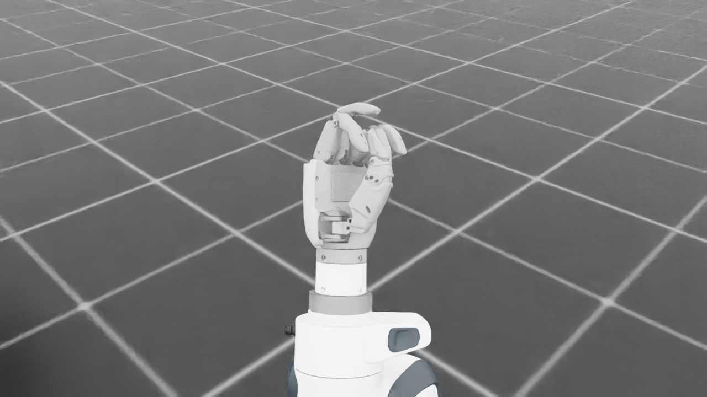
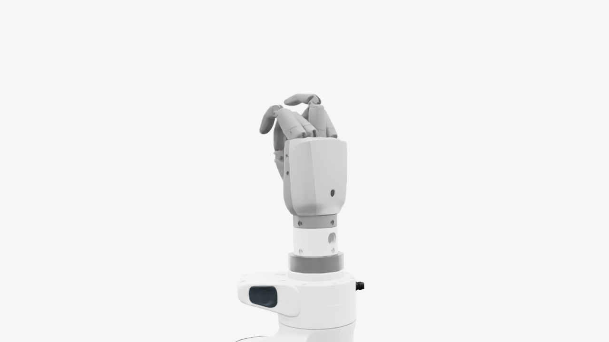
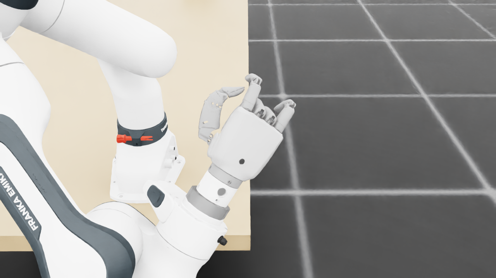
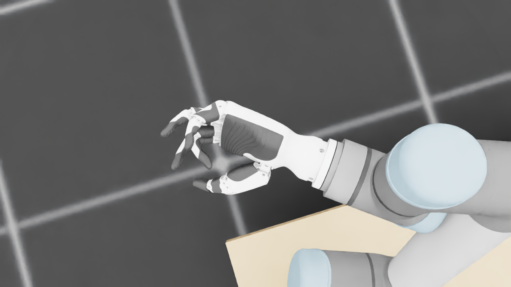
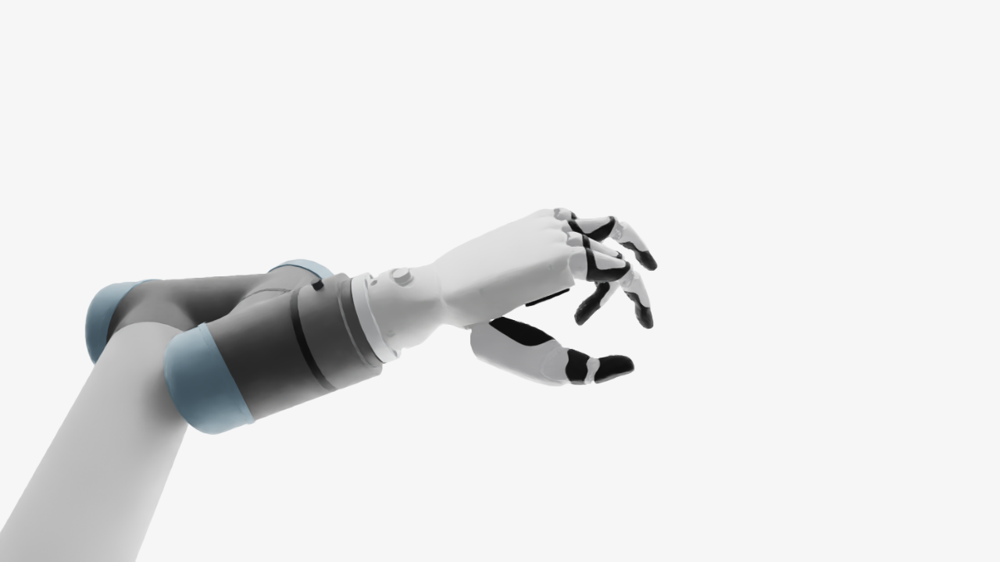
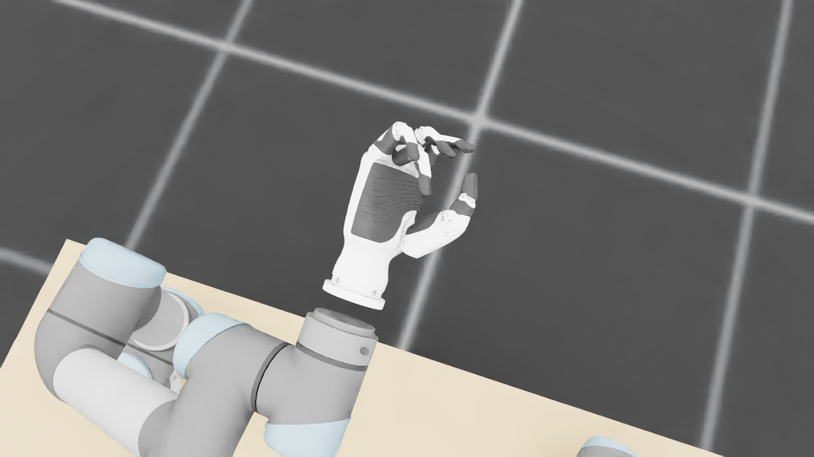
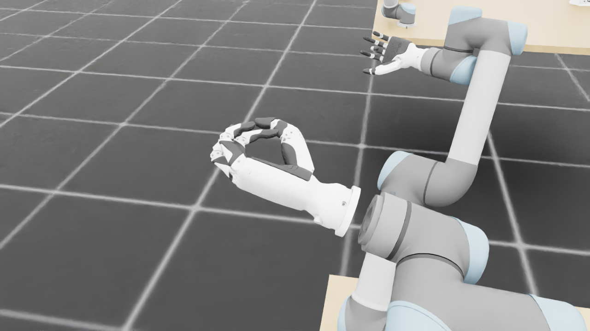
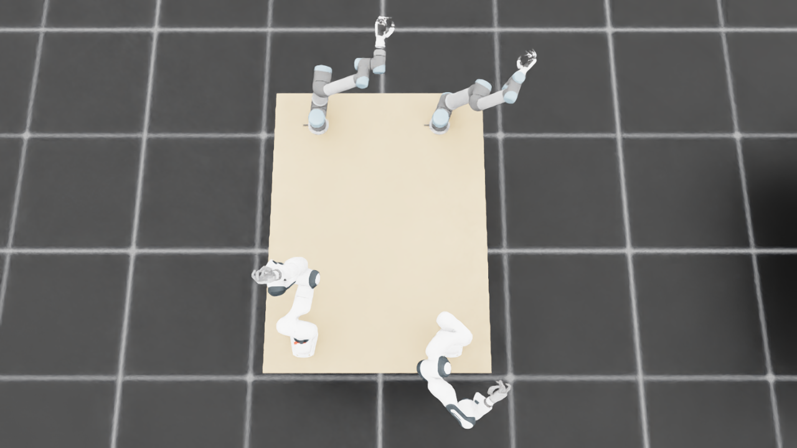
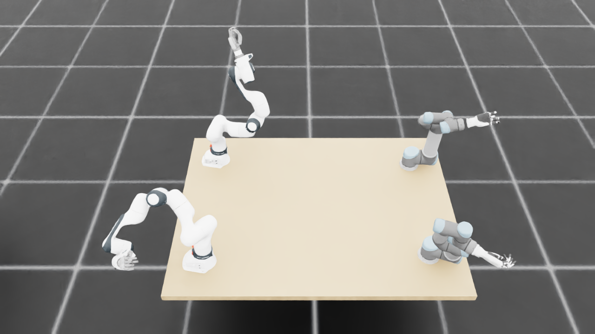
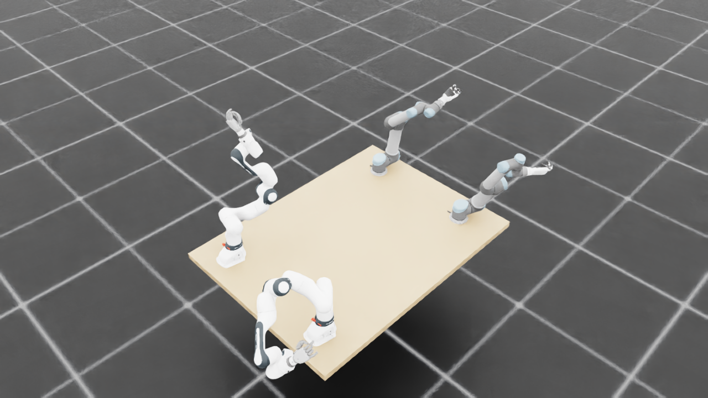

规定初始像素覆盖已通过独立数据验收，完整12步与物理安全未通过。Prescribed initial pixel coverage passes the independent DATA audit; full12-step and physical acceptance remain incomplete. Original1280×720; no edits/crop. Every image below is INITIAL, not micro1/final.
{"seed": 3, "proposal_id": 2123, "global_id": 32843, "family": 3}









{
"qualified": true,
"arms": {
"F_L": {
"qualified": true,
"palm_visual_peak_pixels": 26428,
"finger_family_peak_pixels": {
"thumb": 9131,
"index": 4727,
"middle": 3578,
"ring": 2272,
"little": 4128
},
"per_native_body_peak_pixels": {
"/World/envs/env_30/F_L/f2_hand/left_hand_base": 31976,
"/World/envs/env_30/F_L/f2_hand/left_index_1": 2566,
"/World/envs/env_30/F_L/f2_hand/left_middle_1": 2301,
"/World/envs/env_30/F_L/f2_hand/left_pinky_1": 2668,
"/World/envs/env_30/F_L/f2_hand/left_ring_1": 1588,
"/World/envs/env_30/F_L/f2_hand/left_thumb_1": 716,
"/World/envs/env_30/F_L/f2_hand/left_index_2": 2161,
"/World/envs/env_30/F_L/f2_hand/left_middle_2": 1519,
"/World/envs/env_30/F_L/f2_hand/left_pinky_2": 1460,
"/World/envs/env_30/F_L/f2_hand/left_ring_2": 1191,
"/World/envs/env_30/F_L/f2_hand/left_thumb_2": 5029,
"/World/envs/env_30/F_L/f2_hand/left_thumb_3": 1910,
"/World/envs/env_30/F_L/f2_hand/left_thumb_4": 1476
},
"native_body_visibility_gaps": [],
"all_native_hand_bodies_observed": true,
"full_mesh_coverage_certified": false,
"all_recorded_attempt_peak": {
"qualified": false,
"palm_visual_peak_pixels": 27313,
"finger_family_peak_pixels": {
"thumb": 9463,
"index": 4727,
"middle": 3578,
"ring": 2272,
"little": 4128
},
"per_native_body_peak_pixels": {
"/World/envs/env_30/F_L/f2_hand/left_hand_base": 32898,
"/World/envs/env_30/F_L/f2_hand/left_index_1": 2566,
"/World/envs/env_30/F_L/f2_hand/left_middle_1": 2317,
"/World/envs/env_30/F_L/f2_hand/left_pinky_1": 2668,
"/World/envs/env_30/F_L/f2_hand/left_ring_1": 1588,
"/World/envs/env_30/F_L/f2_hand/left_thumb_1": 716,
"/World/envs/env_30/F_L/f2_hand/left_index_2": 2161,
"/World/envs/env_30/F_L/f2_hand/left_middle_2": 1519,
"/World/envs/env_30/F_L/f2_hand/left_pinky_2": 1460,
"/World/envs/env_30/F_L/f2_hand/left_ring_2": 2052,
"/World/envs/env_30/F_L/f2_hand/left_thumb_2": 5237,
"/World/envs/env_30/F_L/f2_hand/left_thumb_3": 2153,
"/World/envs/env_30/F_L/f2_hand/left_thumb_4": 1766
},
"native_body_visibility_gaps": [],
"all_native_hand_bodies_observed": true,
"full_mesh_coverage_certified": false,
"qualification": false
},
"attempts": 5,
"decoded": 5
},
"F_R": {
"qualified": true,
"palm_visual_peak_pixels": 26254,
"finger_family_peak_pixels": {
"thumb": 8840,
"index": 4276,
"middle": 2122,
"ring": 3548,
"little": 3109
},
"per_native_body_peak_pixels": {
"/World/envs/env_30/F_R/f2_hand/right_hand_base": 31623,
"/World/envs/env_30/F_R/f2_hand/right_index_1": 2779,
"/World/envs/env_30/F_R/f2_hand/right_middle_1": 1014,
"/World/envs/env_30/F_R/f2_hand/right_pinky_1": 2118,
"/World/envs/env_30/F_R/f2_hand/right_ring_1": 1135,
"/World/envs/env_30/F_R/f2_hand/right_thumb_1": 744,
"/World/envs/env_30/F_R/f2_hand/right_index_2": 1497,
"/World/envs/env_30/F_R/f2_hand/right_middle_2": 1628,
"/World/envs/env_30/F_R/f2_hand/right_pinky_2": 1242,
"/World/envs/env_30/F_R/f2_hand/right_ring_2": 2413,
"/World/envs/env_30/F_R/f2_hand/right_thumb_2": 4883,
"/World/envs/env_30/F_R/f2_hand/right_thumb_3": 2099,
"/World/envs/env_30/F_R/f2_hand/right_thumb_4": 1529
},
"native_body_visibility_gaps": [],
"all_native_hand_bodies_observed": true,
"full_mesh_coverage_certified": false,
"all_recorded_attempt_peak": {
"qualified": true,
"palm_visual_peak_pixels": 27698,
"finger_family_peak_pixels": {
"thumb": 8840,
"index": 4276,
"middle": 2122,
"ring": 3548,
"little": 3109
},
"per_native_body_peak_pixels": {
"/World/envs/env_30/F_R/f2_hand/right_hand_base": 33451,
"/World/envs/env_30/F_R/f2_hand/right_index_1": 2779,
"/World/envs/env_30/F_R/f2_hand/right_middle_1": 1014,
"/World/envs/env_30/F_R/f2_hand/right_pinky_1": 2205,
"/World/envs/env_30/F_R/f2_hand/right_ring_1": 1135,
"/World/envs/env_30/F_R/f2_hand/right_thumb_1": 744,
"/World/envs/env_30/F_R/f2_hand/right_index_2": 1497,
"/World/envs/env_30/F_R/f2_hand/right_middle_2": 1628,
"/World/envs/env_30/F_R/f2_hand/right_pinky_2": 1242,
"/World/envs/env_30/F_R/f2_hand/right_ring_2": 2413,
"/World/envs/env_30/F_R/f2_hand/right_thumb_2": 4883,
"/World/envs/env_30/F_R/f2_hand/right_thumb_3": 2099,
"/World/envs/env_30/F_R/f2_hand/right_thumb_4": 1529
},
"native_body_visibility_gaps": [],
"all_native_hand_bodies_observed": true,
"full_mesh_coverage_certified": false,
"qualification": false
},
"attempts": 4,
"decoded": 4
},
"U_L": {
"qualified": true,
"palm_visual_peak_pixels": 12204,
"finger_family_peak_pixels": {
"thumb": 10589,
"index": 4370,
"middle": 3325,
"ring": 3199,
"little": 4978
},
"per_native_body_peak_pixels": {
"/World/envs/env_30/U_L/wrist_3_link": 44620,
"/World/envs/env_30/U_L/left_index_1": 2812,
"/World/envs/env_30/U_L/left_little_1": 3055,
"/World/envs/env_30/U_L/left_middle_1": 1627,
"/World/envs/env_30/U_L/left_ring_1": 1991,
"/World/envs/env_30/U_L/left_thumb_1": 593,
"/World/envs/env_30/U_L/left_index_2": 1558,
"/World/envs/env_30/U_L/left_little_2": 1923,
"/World/envs/env_30/U_L/left_middle_2": 1828,
"/World/envs/env_30/U_L/left_ring_2": 2255,
"/World/envs/env_30/U_L/left_thumb_2": 6275,
"/World/envs/env_30/U_L/left_thumb_3": 2739,
"/World/envs/env_30/U_L/left_thumb_4": 1442
},
"native_body_visibility_gaps": [],
"all_native_hand_bodies_observed": true,
"full_mesh_coverage_certified": false,
"all_recorded_attempt_peak": {
"qualified": false,
"palm_visual_peak_pixels": 15210,
"finger_family_peak_pixels": {
"thumb": 10589,
"index": 4370,
"middle": 3494,
"ring": 3199,
"little": 4978
},
"per_native_body_peak_pixels": {
"/World/envs/env_30/U_L/wrist_3_link": 65356,
"/World/envs/env_30/U_L/left_index_1": 2812,
"/World/envs/env_30/U_L/left_little_1": 3055,
"/World/envs/env_30/U_L/left_middle_1": 1707,
"/World/envs/env_30/U_L/left_ring_1": 2354,
"/World/envs/env_30/U_L/left_thumb_1": 593,
"/World/envs/env_30/U_L/left_index_2": 1558,
"/World/envs/env_30/U_L/left_little_2": 1923,
"/World/envs/env_30/U_L/left_middle_2": 1883,
"/World/envs/env_30/U_L/left_ring_2": 2255,
"/World/envs/env_30/U_L/left_thumb_2": 6275,
"/World/envs/env_30/U_L/left_thumb_3": 2739,
"/World/envs/env_30/U_L/left_thumb_4": 1442
},
"native_body_visibility_gaps": [],
"all_native_hand_bodies_observed": true,
"full_mesh_coverage_certified": false,
"qualification": false
},
"attempts": 6,
"decoded": 6
},
"U_R": {
"qualified": true,
"palm_visual_peak_pixels": 9332,
"finger_family_peak_pixels": {
"thumb": 6988,
"index": 3187,
"middle": 1707,
"ring": 2379,
"little": 4068
},
"per_native_body_peak_pixels": {
"/World/envs/env_30/U_R/wrist_3_link": 33551,
"/World/envs/env_30/U_R/right_index_1": 1905,
"/World/envs/env_30/U_R/right_little_1": 2619,
"/World/envs/env_30/U_R/right_middle_1": 1173,
"/World/envs/env_30/U_R/right_ring_1": 870,
"/World/envs/env_30/U_R/right_thumb_1": 467,
"/World/envs/env_30/U_R/right_index_2": 1282,
"/World/envs/env_30/U_R/right_little_2": 1449,
"/World/envs/env_30/U_R/right_middle_2": 1238,
"/World/envs/env_30/U_R/right_ring_2": 1670,
"/World/envs/env_30/U_R/right_thumb_2": 4077,
"/World/envs/env_30/U_R/right_thumb_3": 2007,
"/World/envs/env_30/U_R/right_thumb_4": 959
},
"native_body_visibility_gaps": [],
"all_native_hand_bodies_observed": true,
"full_mesh_coverage_certified": false,
"all_recorded_attempt_peak": {
"qualified": true,
"palm_visual_peak_pixels": 9332,
"finger_family_peak_pixels": {
"thumb": 6988,
"index": 3187,
"middle": 1707,
"ring": 2379,
"little": 4068
},
"per_native_body_peak_pixels": {
"/World/envs/env_30/U_R/wrist_3_link": 33551,
"/World/envs/env_30/U_R/right_index_1": 1905,
"/World/envs/env_30/U_R/right_little_1": 2619,
"/World/envs/env_30/U_R/right_middle_1": 1173,
"/World/envs/env_30/U_R/right_ring_1": 870,
"/World/envs/env_30/U_R/right_thumb_1": 467,
"/World/envs/env_30/U_R/right_index_2": 1282,
"/World/envs/env_30/U_R/right_little_2": 1449,
"/World/envs/env_30/U_R/right_middle_2": 1238,
"/World/envs/env_30/U_R/right_ring_2": 1670,
"/World/envs/env_30/U_R/right_thumb_2": 4077,
"/World/envs/env_30/U_R/right_thumb_3": 2007,
"/World/envs/env_30/U_R/right_thumb_4": 959
},
"native_body_visibility_gaps": [],
"all_native_hand_bodies_observed": true,
"full_mesh_coverage_certified": false,
"qualification": false
},
"attempts": 4,
"decoded": 4
}
},
"wide": {
"qualified": true,
"per_native_object_peak_pixels": {
"/World/envs/env_30/F_L/fr3_link0": 1995,
"/World/envs/env_30/F_L/fr3_link1": 1910,
"/World/envs/env_30/F_L/fr3_link2": 1795,
"/World/envs/env_30/F_L/fr3_link3": 1713,
"/World/envs/env_30/F_L/fr3_link4": 925,
"/World/envs/env_30/F_L/fr3_link5": 2307,
"/World/envs/env_30/F_L/fr3_link6": 1172,
"/World/envs/env_30/F_L/fr3_link7": 653,
"/World/envs/env_30/F_L/fr3_link8": 118,
"/World/envs/env_30/F_L/f2_hand/left_hand_base": 669,
"/World/envs/env_30/F_L/f2_hand/left_index_1": 83,
"/World/envs/env_30/F_L/f2_hand/left_middle_1": 41,
"/World/envs/env_30/F_L/f2_hand/left_pinky_1": 42,
"/World/envs/env_30/F_L/f2_hand/left_ring_1": 28,
"/World/envs/env_30/F_L/f2_hand/left_thumb_1": 26,
"/World/envs/env_30/F_L/f2_hand/left_index_2": 62,
"/World/envs/env_30/F_L/f2_hand/left_middle_2": 72,
"/World/envs/env_30/F_L/f2_hand/left_pinky_2": 50,
"/World/envs/env_30/F_L/f2_hand/left_ring_2": 19,
"/World/envs/env_30/F_L/f2_hand/left_thumb_2": 141,
"/World/envs/env_30/F_L/f2_hand/left_thumb_3": 53,
"/World/envs/env_30/F_L/f2_hand/left_thumb_4": 33,
"/World/envs/env_30/F_R/fr3_link0": 2741,
"/World/envs/env_30/F_R/fr3_link1": 2596,
"/World/envs/env_30/F_R/fr3_link2": 3502,
"/World/envs/env_30/F_R/fr3_link3": 2819,
"/World/envs/env_30/F_R/fr3_link4": 1506,
"/World/envs/env_30/F_R/fr3_link5": 3364,
"/World/envs/env_30/F_R/fr3_link6": 964,
"/World/envs/env_30/F_R/fr3_link7": 757,
"/World/envs/env_30/F_R/fr3_link8": 130,
"/World/envs/env_30/F_R/f2_hand/right_hand_base": 750,
"/World/envs/env_30/F_R/f2_hand/right_index_1": 70,
"/World/envs/env_30/F_R/f2_hand/right_middle_1": 97,
"/World/envs/env_30/F_R/f2_hand/right_pinky_1": 72,
"/World/envs/env_30/F_R/f2_hand/right_ring_1": 97,
"/World/envs/env_30/F_R/f2_hand/right_thumb_1": 8,
"/World/envs/env_30/F_R/f2_hand/right_index_2": 97,
"/World/envs/env_30/F_R/f2_hand/right_middle_2": 71,
"/World/envs/env_30/F_R/f2_hand/right_pinky_2": 61,
"/World/envs/env_30/F_R/f2_hand/right_ring_2": 29,
"/World/envs/env_30/F_R/f2_hand/right_thumb_2": 104,
"/World/envs/env_30/F_R/f2_hand/right_thumb_3": 49,
"/World/envs/env_30/F_R/f2_hand/right_thumb_4": 60,
"/World/envs/env_30/U_L/base_link": 497,
"/World/envs/env_30/U_L/shoulder_link": 1586,
"/World/envs/env_30/U_L/upper_arm_link": 2038,
"/World/envs/env_30/U_L/forearm_link": 2484,
"/World/envs/env_30/U_L/wrist_1_link": 1489,
"/World/envs/env_30/U_L/wrist_2_link": 693,
"/World/envs/env_30/U_L/wrist_3_link": 1744,
"/World/envs/env_30/U_L/left_index_1": 16,
"/World/envs/env_30/U_L/left_little_1": 155,
"/World/envs/env_30/U_L/left_middle_1": 26,
"/World/envs/env_30/U_L/left_ring_1": 87,
"/World/envs/env_30/U_L/left_thumb_1": 8,
"/World/envs/env_30/U_L/left_index_2": 64,
"/World/envs/env_30/U_L/left_little_2": 79,
"/World/envs/env_30/U_L/left_middle_2": 72,
"/World/envs/env_30/U_L/left_ring_2": 104,
"/World/envs/env_30/U_L/left_thumb_2": 86,
"/World/envs/env_30/U_L/left_thumb_3": 64,
"/World/envs/env_30/U_L/left_thumb_4": 42,
"/World/envs/env_30/U_R/base_link": 370,
"/World/envs/env_30/U_R/shoulder_link": 1515,
"/World/envs/env_30/U_R/upper_arm_link": 2749,
"/World/envs/env_30/U_R/forearm_link": 2144,
"/World/envs/env_30/U_R/wrist_1_link": 461,
"/World/envs/env_30/U_R/wrist_2_link": 1102,
"/World/envs/env_30/U_R/wrist_3_link": 1386,
"/World/envs/env_30/U_R/right_index_1": 25,
"/World/envs/env_30/U_R/right_little_1": 45,
"/World/envs/env_30/U_R/right_middle_1": 51,
"/World/envs/env_30/U_R/right_ring_1": 29,
"/World/envs/env_30/U_R/right_thumb_1": 3,
"/World/envs/env_30/U_R/right_index_2": 24,
"/World/envs/env_30/U_R/right_little_2": 40,
"/World/envs/env_30/U_R/right_middle_2": 34,
"/World/envs/env_30/U_R/right_ring_2": 57,
"/World/envs/env_30/U_R/right_thumb_2": 114,
"/World/envs/env_30/U_R/right_thumb_3": 70,
"/World/envs/env_30/U_R/right_thumb_4": 42,
"/World/envs/env_30/TableF": 93066,
"/World/envs/env_30/TableU": 94290
},
"arm_peak_pixels": {
"F_L": 13485,
"F_R": 18618,
"U_L": 10852,
"U_R": 9441
},
"table_peak_pixels": {
"TableF": 93066,
"TableU": 94290
},
"critical_body_peak_pixels": {
"/World/envs/env_30/U_L/forearm_link": 2484,
"/World/envs/env_30/U_L/wrist_2_link": 693,
"/World/envs/env_30/U_R/forearm_link": 2144,
"/World/envs/env_30/U_R/wrist_2_link": 1102
}
},
"raw_attempt_count": 23,
"PNG_count": 23,
"angle_records": 23,
"max_actual_angle_identity_error_deg": 0.0,
"held_snapshot_checks": 1862,
"universal_visibility_impossible": false,
"full_mesh_coverage_certified": false
}